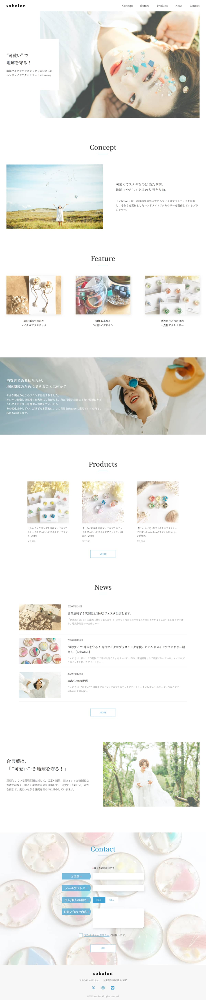

Sobolon 架空サイト

Overview
デザインの意図を崩さないよう構造を整理しながら、HTML/CSSで忠実に再現しました。
Point
- 参考動画をもとにしながらも、自分で構造を分解し、再現力を高めることを目的として実装しました。
- CSS設計にBEMを採用し、クラス構造の可読性と保守性を意識しました
Tech
HTML / SCSS / JavaScript
Role
Design：デイトラ提供（課題カンプ）
Coding：全て実装